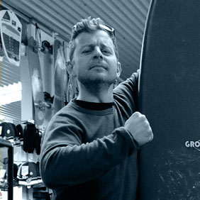
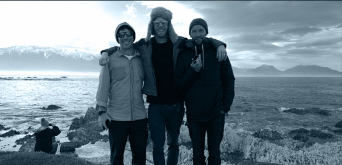
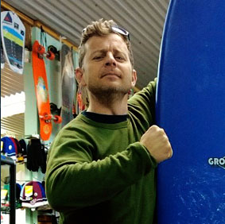

Crew Bios
- 
- 
Leandro Righini
Creative director
Producer, filmer, director, photographer and storyteller, Cape Finn (@capefinn) founder Leandro Righini likes to explore “the intersection between technology and storytelling” in his work, something he has had plenty of opportunity to do in a career spanning twenty years and encompassing stints in the film, TV and advertising industries.
“I grew up in Cape Town, mesmerized by the ocean, but really I’ve been travelling for the last twenty years. Along the way I have racked up 19 years of experience in filmmaking, a beautiful wife, two amazing daughters and a deep love for storytelling. During these travels, I have worked on productions such as Moulin Rouge, been a dive master in Queensland, a skater in Sydney, a teacher in Finland and just plain lost in Egypt”.
The Nokia Transitions 1020 project gave Leandro the latest excuse to explore his favourite themes. “I’m constantly amazed at the evolution that is taking place in mobile imaging. I love doing this kind of work, it is about pushing the device to the limits and being creative with technology”.
Valtteri Hirvonen
Photographer
Snowboarding and travel have been Valtteri’s obsessions since he talked his parents into letting him take a trip from his home in Helsinki to Hemsedal in Norway at the age of 14. “Yeah my parents really trusted us, and I think that’s how it should be”.
A love of photography – inspired by the realization that a camera meant he’d never have to pay for gig tickets ever again – came next. Soon Valtteri was combining the three passions to great effect, honing his craft while spending a winter riding in Chamonix, and later through stints at photography college and renowned Finnish photography agency Kuvaamo.
Today, he makes a living as a filmmaker and photographer and still packs in as many snowboarding trips as he can. The only problem with this fulfilling life?
Matt Barr
Writer, producer
Matt Barr has been writing about action sports since he started working for Whitelines in 1995, a magazine he went on to edit.
He spent much of the subsequent decade traveling to lesser-known corners of the actions sports world like Argentina, Iran, Japan, Bosnia, Serbia, Lebanon, Uzbekistan and Russia.
Today, he lives in Brighton with his wife. He runs the agency All Conditions Media (@AllConMedia) and Looking Sideways (@WeLookSideways), and still finds time to write for Whitelines, Transworld Snowboarding, Transworld Business, OnBoard, ESPN, the Guardian, the Independent, the FT and the Times, among others.
Ed Leigh
Presenter
Ed Leigh lives in New Zealand with his family and calls himself a broadcaster but, as he says, “in layman's terms I’m a storyteller really”. This skill has opened many doors, but the most coveted is his role as the BBC's snowboard correspondent.
Ed's love of standing sideways started when he discovered skateboarding at nine. He quickly progressed to snow and, nurturing dreams of becoming professional, headed to the mountains when he left school. “I had a little success before a knee injury put things in perspective”. Turning a negative into a positive, he used the recovery time to write for magazines, MC contests and dabble in television, which as it turned out he was better at than snowboarding.
Ed will tell you he has made a career out of bridging the sensitive gap between the core values of board sports and their perception in the mainstream. But he will also concede that timing has played its part. The growth of the sports has allowed him to attend three Olympic Games, and Sochi will be his fourth. The massive exposure snowboarding in particular is receiving means it is more important than ever to set the right tone and this trip allowed Ed to explore his own and others ideas on how best to do that.
- 
Stuart Wells
Executive producer
With a mother that was a gymnast and PE teacher, Stuart was brought up with a healthy love of sport and competition from an early age. His creative curiosity and interest in technology developed as a youngster too, but it was only when he joined Nokia that he was able to bring together sport, creativity and technology through his award winning Push Snowboarding project, which was the starting point for a fruitful partnership between Nokia and Burton.
Stuart is in the process of relocating his girlfriend, son and collection of snowboards from Helsinki to Berlin.
"I'm slightly obsessed with snowboarding but also the tension that exists between a sport with Olympic status and, yet, one that struggles in some way to accept the competitive nature of modern sport. I thought it would be a fascinating story to tell by this group of incredibly talented and knowledgeable people. Sadly none of whom can cook a decent breakfast, which provided a practical role for me to fill on the trip too."